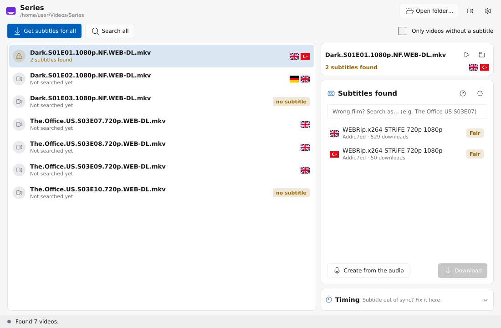

The right subtitle for every video.
Found, fixed and synced to the audio in seconds. Free and open source.

Picks the right one
Every subtitle from OpenSubtitles, SubDL and Addic7ed is scored against your exact file, not just its name.
Synced to the audio
Offset, frame rate and cut scenes are fixed from the speech. Subtitles inside the video can be used too.
Works in your player
One click adds SubMagician to mpv and VLC. Press a key and the subtitle appears.